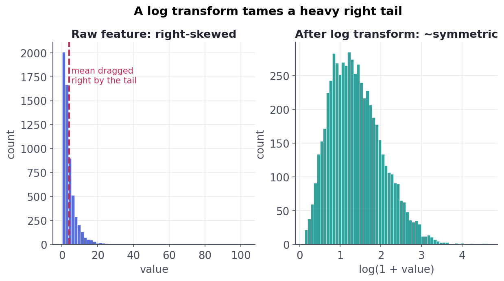

Numeric Transforms
Scaling, binning, logs, and interactions.
Numeric columns look ready to use — they're already numbers — but raw numbers routinely mislead models. A feature measured in the millions dwarfs one measured in fractions; a heavy-tailed column lets a handful of giants dominate; an outlier drags a mean off a cliff. Shaping numeric features — scaling, transforming, binning, taming outliers — is often the cheapest accuracy you'll ever buy.
Standardize / normalizeScaling: put features on a level playing field
Many models judge features by their magnitude. In a distance-based model (kNN, k-means) or a gradient-descent one (linear/logistic regression, neural nets), a feature ranging 0–1,000,000 will swamp one ranging 0–1 — not because it matters more, but because it's bigger. Two standard fixes:
- Standardization (
StandardScaler): subtract the mean, divide by the std → each feature has mean 0, std 1. The default choice. - Min–max normalization (
MinMaxScaler): rescale to a fixed range like [0, 1]. Handy when you need bounded inputs.
Fit the scaler's statistics on train only, then apply to test (the lesson-9.1 rule).
Tree-based models don't need scaling. Decision trees, random forests, and gradient boosting split on thresholds ("is income > 50k?"), which don't care about units or magnitude. Scaling matters for distance- and gradient-based models. Knowing which camp your model is in saves pointless work — and is a common interview check.
Log & friendsTransforms: fix the shape, not just the scale
Money, counts, populations, and durations are usually right-skewed — a long tail of large values. Skew hurts models that assume roughly symmetric inputs and lets the tail dominate. A log transform compresses the tail and pulls the distribution toward symmetry:

log(1 + x) (right) the distribution is far more symmetric, so no handful of giants dominates and models behave far better.Common transforms: log (for positive, right-skewed data — use log1p so zeros are safe), square root (gentler than log, works with zeros), and Box–Cox / Yeo–Johnson (which search for the best power transform automatically). See the skew collapse in code:
import numpy as np
from scipy import stats
rng = np.random.default_rng(3)
x = rng.lognormal(mean=1.0, sigma=0.9, size=6000) # heavy right tail
print(f"skew, raw: {stats.skew(x):5.2f} <- very skewed")
print(f"skew, log1p(x): {stats.skew(np.log1p(x)):5.2f} <- collapsed from ~5.6 to ~0.6")skew, raw: 5.64 <- very skewed skew, log1p(x): 0.60 <- collapsed from ~5.6 to ~0.6
When raw values fight youBinning and outliers
- Binning turns a continuous feature into ranges (age →
18-25,26-40, ...). It can capture non-linear effects for simple models and add robustness, at the cost of throwing away resolution. Use it when the relationship is genuinely step-like, not reflexively. - Outliers can wreck mean-based features and gradient models. Options: clip / winsorize (cap values at, say, the 1st and 99th percentiles), transform (a log often dissolves the problem), or leave them for tree models that don't care. What you must not do is delete rows silently — an 'outlier' may be your most important case (fraud, churn).
Never reflexively drop outliers. In fraud, health, and churn, the extreme rows are frequently the signal, not noise. Investigate first: is it a data-entry error (fix/remove) or a real extreme (keep, maybe clip/transform)? Deleting the tail can delete the very thing you're paid to predict.
Interactive labYour turn — measure how a transform tames skew
The feature x has a heavy right tail. Apply a log1p transform, measure the new skewness with scipy.stats.skew, round to 2 decimals, and assign to answer. (Raw skew is large and positive; the transform should sharply reduce it — from ~5.6 to under 1.)
np.log1p(x) applies log(1+x); wrap it in stats.skew(...), cast to float, round to 2 dp.answer = round(float(stats.skew(np.log1p(x))), 2)The raw feature's skew is huge (5.6); after log1p it drops to 0.6 — from severely to only mildly skewed (a pure log reaches ~0 but isn't zero-safe). That's why log transforms are the first reflex for money, counts, and any heavy-tailed feature feeding a linear or distance-based model.
★ Key points to remember
- Scale features for distance- and gradient-based models (kNN, k-means, linear, NN); standardization (mean 0, std 1) is the default. Trees don't need scaling.
- Fit scalers/transforms on train only, then apply to test.
- Right-skewed features (money, counts) → log/sqrt/Box-Cox to restore symmetry (use
log1pfor zeros). - Binning trades resolution for capturing step-like effects; use it deliberately, not reflexively.
- Outliers: clip/winsorize or transform — but investigate before deleting; the extreme row may be the signal.
age (0-100) and income (0-500,000). Why must you scale?◆ Practice▸
revenue feature ranges from $0 to $2M and is extremely right-skewed. You'll feed it to a logistic regression. What do you do and why?Show solution & reasoning
Two moves. (1) Transform the skew: apply log1p(revenue) (log handles the heavy right tail and the +1 keeps zeros valid), turning a long-tailed feature into a roughly symmetric one so a few huge accounts don't dominate. (2) Scale it: logistic regression is gradient-based, so standardize (mean 0, std 1) — fitting the log parameters and the scaler on the training set only, then applying to test. Together this stops the feature from swamping others and helps the optimizer converge. (For a tree model, neither step is strictly needed.)
Show solution & reasoning
Binning helps when the relationship with the target is genuinely step-like or non-monotonic and you're using a model that can't easily capture that (e.g. a plain linear model), or when you want robustness to outliers and noise in the raw values, or for interpretability ("18–25 vs 26–40"). The cost is lost resolution: you throw away within-bin ordering and fine distinctions, which can reduce accuracy when the relationship is smooth — and results depend on where you place the bin edges. Flexible models (trees, boosting) usually find the right cut points themselves, so bin deliberately, not by default.
◎ Deep dive: robust scaling, and why log makes multiplicative effects additive▸
Standardize vs. normalize vs. robust-scale. StandardScaler (z-score) assumes roughly bell-shaped data and is the default; MinMaxScaler maps to a fixed range and is useful when a model needs bounded inputs (some neural nets) but is sensitive to outliers (one extreme value squashes everyone else). RobustScaler centres on the median and scales by the interquartile range, so it shrugs off outliers — a good pick for heavy-tailed features you don't want to transform. Match the scaler to the data's shape, and remember all of them learn parameters that must be fit on train only.
Why symmetry helps at all. Linear and distance models implicitly treat a unit of a feature as equally meaningful everywhere, and squared-error losses are dominated by large values. A right-skewed feature violates both: the tail's few giant values carry most of the leverage and distort coefficients. A log transform makes multiplicative differences additive (a jump from $1k to $10k becomes the same size as $10k to $100k), which often matches how the effect actually behaves — e.g. the ratio of incomes matters more than the raw dollar gap. So a log isn't just cosmetic; it frequently encodes the right notion of distance for the problem.